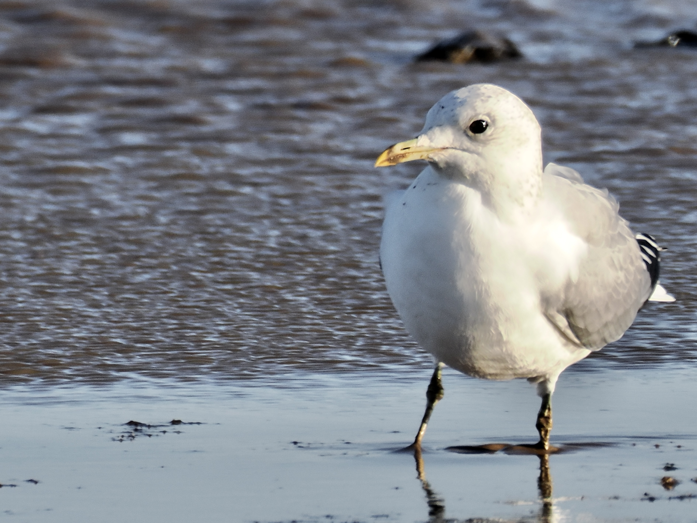

Common Gull
Larus canus
Order: Charadriiformes
Family: Laridae

A small gull with a small yellow bill with a dark dot or ring. Legs are greenish yellow; eyes are dark. Not at all common!
Order: Charadriiformes
Family: Laridae

A small gull with a small yellow bill with a dark dot or ring. Legs are greenish yellow; eyes are dark. Not at all common!